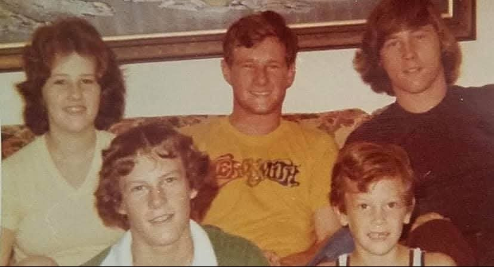
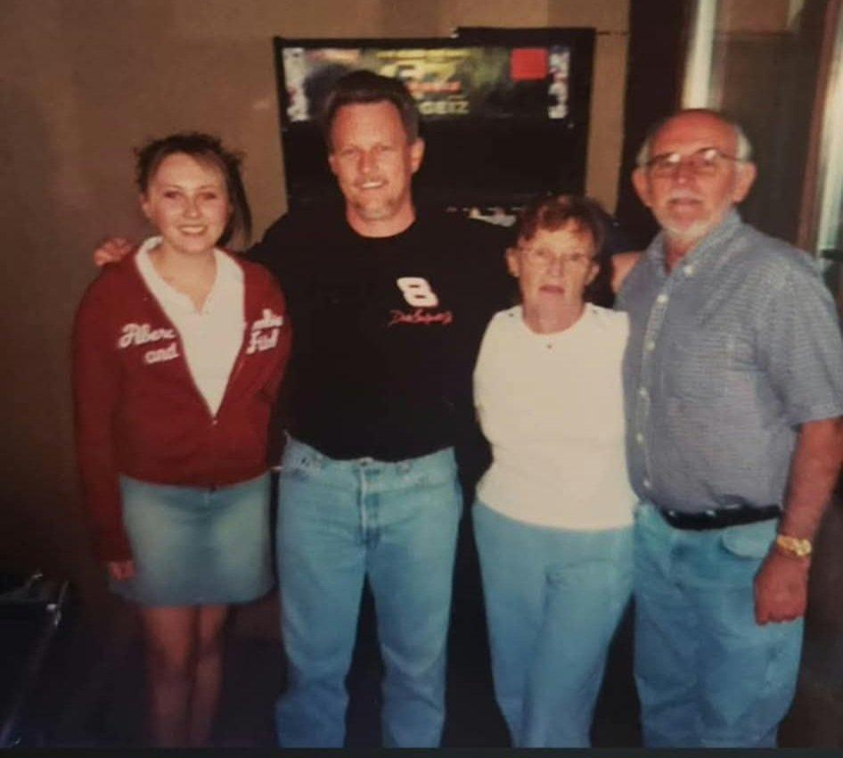

9 February 1939 – 7 June 2006 (family date)
1939 · age 0
Born, Cincinnati area, Ohio FAMILY ACCOUNT
1956 · age 17
Married Homer William Brewster Jr. (family date 18 Apr 1956), Tennessee FAMILY ACCOUNT
1957–1962 · age 18–23
Four children born, Hamilton and Preble Co., Ohio FAMILY ACCOUNT
Later · age
Lived in Hartwell, Cincinnati, Ohio FAMILY ACCOUNT
2006 · age 67
Died (family date 7 Jun 2006) FAMILY ACCOUNT
Judith Mae "Judy" Palmer was born February 9, 1939, the daughter of William Peter Palmer and Mary Jane Williams, and grew up in Cincinnati, one of three sisters. Her father's parents, Peter Palmer and Margaret Lorch, were Austro-Hungarian immigrants who crossed the Atlantic before the First World War.
At seventeen she ran off to Tennessee with Homer William Brewster Jr., and they married; the family gives the date as April 18, 1956. They raised four children in the Hamilton and Preble County areas. She later married Larry Clark, and they had a son, Barry, who died before she did.
Judy held the family together from a house in Hartwell, with a pool in the backyard where the grandchildren and cousins swam. She died about 2006, aged about sixty-seven; the family gives the date as June 7, 2006.
More of Judy's story is in the couple profile. It will be added here once the family members who shared it approve it.


Grades: DOCUMENTED an original record says it · SUPPORTED several records point to it · FAMILY ACCOUNT the family's own telling · UNPROVED a lead, not proved.
No DNA matches linked yet.
Have a story, photo, correction or record? Leave a note in Judy's Family Notes doc. We check each note and update this profile.
Profile history: Created 2 November 2026 from the family couple profile and research notes.